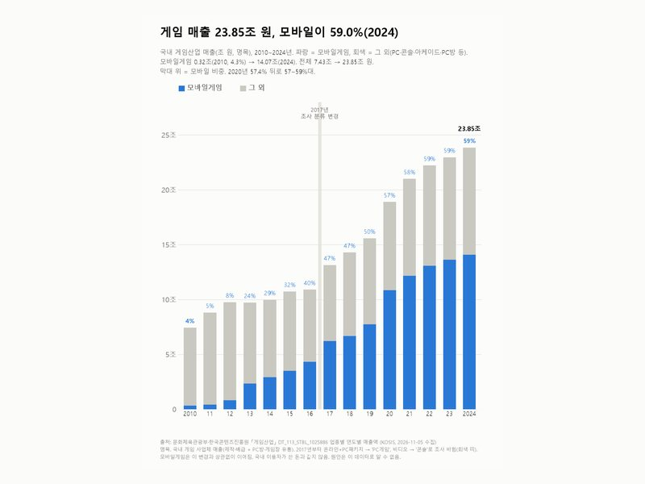
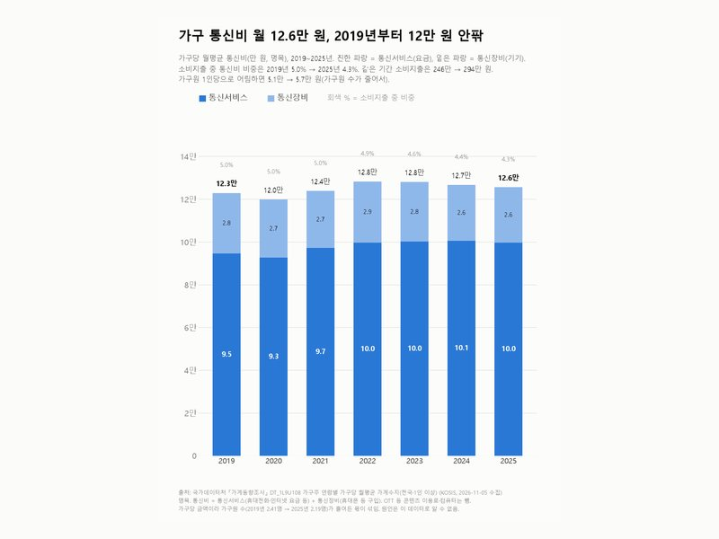
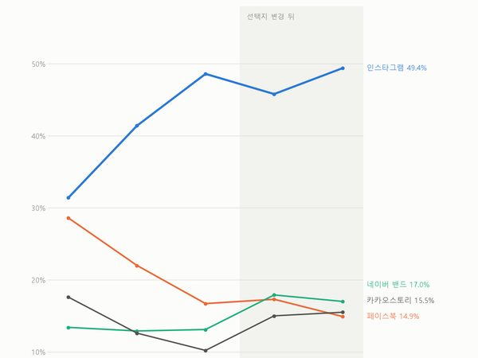
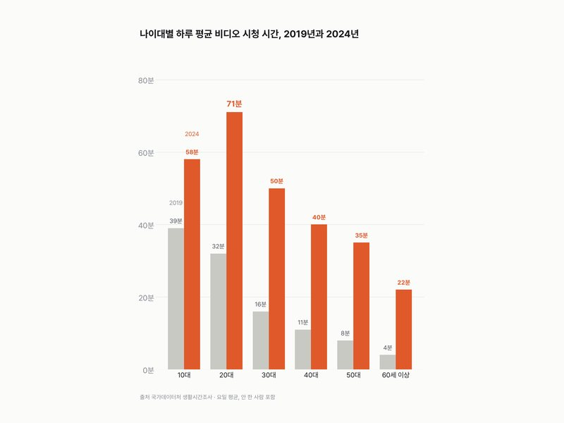
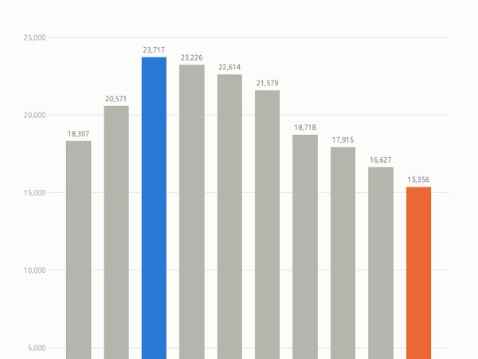
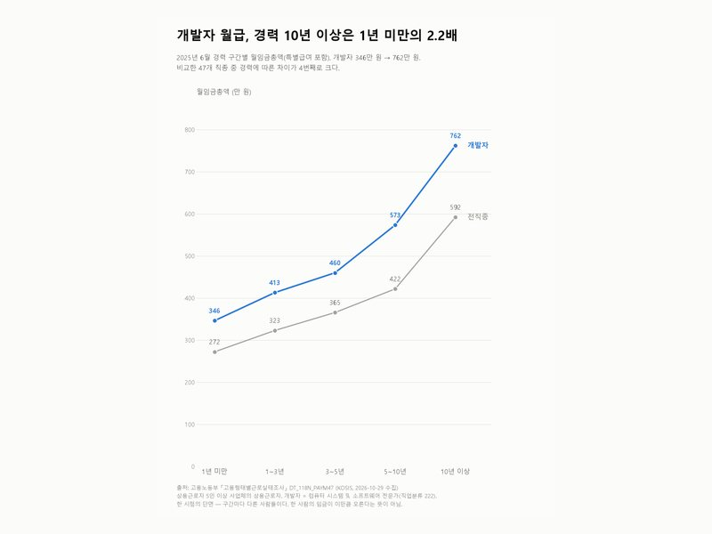

카테고리
디지털·크리에이터
19편 · 최신 글부터
 화제디지털·크리에이터7,017원
화제디지털·크리에이터7,017원OTT에 한 달 평균 7,017원, 30대는 12,420원
콘텐츠이용행태조사 화제디지털·크리에이터47.0%
화제디지털·크리에이터47.0%유튜브 등에선 인플루언서 구독 47.0%, 1위(2024)
소셜미디어 이용자 조사
화제디지털·크리에이터59.0%게임 매출 23.85조 원, 모바일이 59.0%(2024)
게임산업(콘텐츠진흥원)
화제디지털·크리에이터12.6만 원가구 통신비 월 12.6만 원, 2019년부터 12만 원 안팎
가계동향조사 화제디지털·크리에이터7.5배
화제디지털·크리에이터7.5배모바일 광고비 7.79조, 지상파TV 1.04조의 7.5배(2024)
방송통신광고비조사 화제디지털·크리에이터10.4%
화제디지털·크리에이터10.4%AI 이용자 10명 중 1명, 챗GPT에 돈 내 봤다(10.4%)
지능정보사회 이용자 패널조사 화제디지털·크리에이터45.6%
화제디지털·크리에이터45.6%숏폼 1순위 유튜브 숏츠 45.6%, 릴스는 9.7% → 21.1%
스마트폰 과의존 실태조사 화제디지털·크리에이터43.0%
화제디지털·크리에이터43.0%청소년 스마트폰 과의존위험군 43.0%, 2016년 이후 가장 높다
스마트폰 과의존 실태조사 화제디지털·크리에이터38.9%
화제디지털·크리에이터38.9%생성형 AI 써 본 사람 12.3% → 38.9%, 2년 새 3배
지능정보사회이용자패널조사 디지털·크리에이터67.4%
디지털·크리에이터67.4%SW 인력 충원 계획 없는 기업 67.4%
SW융합실태조사 디지털·크리에이터3.2%
디지털·크리에이터3.2%유튜브 보는 사람 100명 중 3명이 채널 운영
소셜미디어이용자조사
디지털·크리에이터49.4%주로 쓰는 SNS, 인스타그램 31.4% → 49.4%
한국미디어패널조사 디지털·크리에이터33% vs 53%
디지털·크리에이터33% vs 53%20대 아이폰 비중, 조사마다 33%와 53%
방송매체이용행태조사 디지털·크리에이터16~39%
디지털·크리에이터16~39%크리에이터 몫, 수익 종류에 따라 16~39%
디지털크리에이터미디어산업 실태조사
디지털·크리에이터32분 → 71분20대 '비디오 시청' 하루 32분 → 71분
생활시간조사
디지털·크리에이터−34%소프트웨어 개발자 구인, 3년 새 34% 줄었다
직종별사업체노동력조사
디지털·크리에이터2.2배개발자 월급, 경력 10년 이상은 1년 미만의 2.2배
고용형태별근로실태조사 디지털·크리에이터0.55 → 0.15대
디지털·크리에이터0.55 → 0.15대디지털카메라는 줄고, 태블릿은 늘었다
방송매체이용행태조사 + 한국미디어패널 디지털·크리에이터923만 원 vs 7,100만 원
디지털·크리에이터923만 원 vs 7,100만 원'유튜버 평균 수입'은 7,100만 원? 923만 원?
국세통계 원천징수